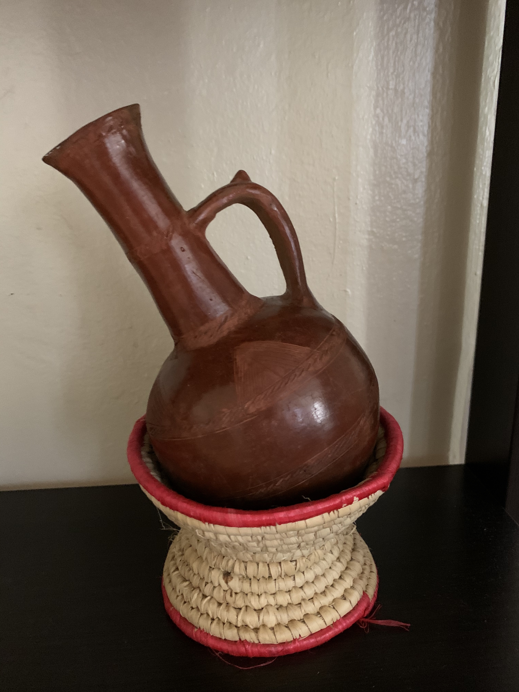
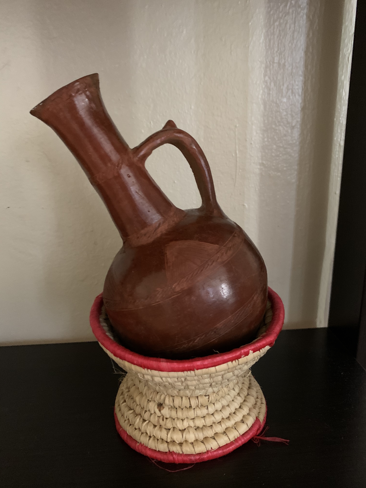

My name is Mubarak and this is my hobby page where I like to share my love for coffee specifically for Eritrean coffee. I grew up in an East African family where coffee is a ritual that is widely used in family/friends gatherings, celebrations and chit chat. The whole process takes about 2-3 hours in the old days since, but nowadays probably an hour. Coffee is made 1-3 times per day. Me and my wife do this once a day usually in the morning or afternoon. I enjoy the process as you get to witness and experience every thing from start to finish and of course enjoy a nice tasty aromatic cup of coffee in the end. The Eritrean coffee (Bune) preparation is very similar to the Ethiopian coffee (Buna).


(a)Wash the green coffee beans and then roast them in a small pan (Menkeshkesh) (b)When the beans are dark enough, the pot is hand around so that everyone can enjoy the aroma (c)Then the beans are crushed in a mortar (Maukatebune) and sprinkled on a small mat (Meshrefet) with which the ground coffee is poured into the pot (Jebena) together with water as well as with spices like ginger (Jenjeble) (d)The coffee is boiled for about 30 mins, but should not boil over (e)For cooling, the coffee is therefore poured 3-4 times into a small pot and back again in the pot (Jebena) (f)After the coffee is finished, it is poured into a small delicate Porcelain cups (Finjal) with some sugar or no sugar.

 

Most of the coffee tools mentioned above can be bought online (click here) or in most Eritrean/Ethiopian stores. You can replace most of the traditional tools with regular tools or replace some of them (the mortar for a regular grinder) and still enjoy your coffee, but I do recommend the pot as it gives the coffee more flavour. If you want to see how to prepare the coffee with regular tools, click here.
Pastries, cookies or popcorn is usually served as it compliments the taste of the coffee. The coffee is poured three times. The first round coffee (awel) is the strongest, I sometimes have two of these especially if it's in the morning time. This is when delicate conversations start such as a project, an important business, political topics or similar.The second round (kalei) with a little weaker coffee stands for the health and the soul. which finds its dissolution, in the 3rd cup, the (baraka). Sometimes there is a fourth cup (derdja) which is usually reserved for the household, not for guests. I have it sometimes but not most of the time. If there are guests and coffee is getting prepared, whoever leaves the session earlier is considered rude and means he did not like the coffee.
Here are some more resources, where they talk more about the ceremony and provide more information.
Link1